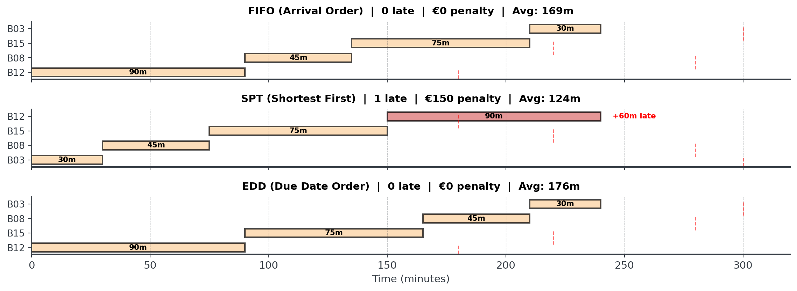

Smart Quick Decisions
Lecture 6 - Management Science
Dr. Tobias Vlćek
Introduction
Client Briefing: Custom Cycles Manufacturing
Operations Manager’s Friday Crisis:
“It’s Friday at 06:00 in the morning. We just received 16 custom bicycle orders that must be completed by this evening. Two workstations. Rush orders with penalties. Overtime costs €100/hour after Friday 19:00. How do we schedule production to minimize costs?”
The Manufacturing Challenge
Custom Cycles faces multiple scheduling decisions:
- Order Sequencing: Which bike to build first?
- Workstation Management: Assembly must finish before painting
- Deadline Pressure: Rush orders have steep penalties (€150 each)
- Cost Control: Overtime at €100/hour after Saturday 8 PM
The Stakes: With 16 orders totaling 13+ hours of work, wrong scheduling could mean €1000+ in overtime and penalties!
Why Can’t We Just Try Everything?
Question: With 16 bicycle orders to sequence, how many possible schedules exist?
16! = 20,922,789,888,000 possible schedules
Number of Orders
- 5 bikes
- 10 bikes
- 16 bikes
Possible Schedules
- 120
- 3.6 million
- 20.9 trillion
Testing all 20.9 trillion possibilities for 16 bikes would take thousands of years on a modern computer!
Can You Spot the Pattern?
Look at these 4 bicycle orders. Which should we build first?
| Order | Arrival | Processing | Due | Penalty |
|---|---|---|---|---|
| B12 | 1st | 90 min | 180 min | €150 |
| B08 | 2nd | 45 min | 280 min | €150 |
| B15 | 3rd | 75 min | 220 min | €150 |
| B03 | 4th | 30 min | 300 min | €150 |
Question: How would you proceed here?
This is the greedy choice problem: Which local decision leads to the best global outcome?
Core Concepts
What Are Greedy Algorithms?
Greedy algorithms make the locally optimal choice at each step.
The Idea: “Take what looks best right now, don’t look back”
- Fast: O(n log n)1 vs O(n!) for exhaustive search
- Simple: Easy to implement and explain
- Good Enough: Often near-optimal for many problems
- But: No guarantee of global optimality
The Greedy Paradigm
Algorithmic strategy that builds solutions piece by piece
Core Philosophy:
- Make the best immediate decision at each step
- Never reconsider previous choices (no backtracking)
- Hope that local optimality leads to global optimality
- Trade guaranteed optimality for speed and simplicity
Greedy in Everyday Life
You already use greedy thinking daily!
Common Greedy Decisions:
- Making change: Give the largest coin first (€2 → €1 → €0.50…)
- Grocery shopping: Pick items with best price/value ratio
- Route planning: Take the nearest unvisited landmark
- Packing a suitcase: Put largest items in first
- Reading emails: Answer quick replies first, defer complex ones
Question: Which of these actually gives the optimal solution?
When Greedy Works vs. Fails
Not all greedy algorithms are optimal
Greedy IS Optimal:
- Kruskal’s algorithms (minimum spanning tree)
- SPT scheduling (minimizes average flow time)
- EDD scheduling (minimizes maximum lateness)
Greedy FAILS:
- Traveling salesman problem (nearest neighbor is worse)
- 0/1 Knapsack (greedy by value/weight ratio fails)
The Two Key Properties
For greedy to be optimal, we need:
1. Greedy Choice Property
- Locally optimal choice leads to globally optimal solution
- Can make choice without considering future consequences
2. Optimal Substructure
- Optimal solution contains optimal solutions to subproblems
- After making greedy choice, remaining problem is similar
Complexity: Why Greedy is Fast
For 16 bikes: Exhaustive = 20 trillion operations, Greedy = 64 operations!
Three Classic Scheduling Rules
We’ll explore three greedy approaches that manufacturing uses:
- FIFO (First In, First Out) - The fairness rule
- SPT (Shortest Processing Time) - The efficiency rule
- EDD (Earliest Due Date) - The deadline rule
Question: Just as first feeling. Which rule would you use for the bike factory with penalties and overtime costs?
Rule 1: FIFO (First In, First Out)
Process jobs in the order they arrive, no prioritization.
- When it’s good: Ensures fairness and prevents “customer favoritism”
- When it’s optimal: When all jobs have equal importance and no deadlines
- Real-world use: Bank queues, ticket counters, help desk systems
Like scheduling job interviews when all candidates applied at different times: You interview in application order to be fair, even if some candidates are stronger.
Example: Hospital Check-In

See the pattern? We just do patient A, then patient B, then patient C, then patient D.
2: SPT (Shortest Processing Time)
The Idea: Process quickest job next to maximize throughput.
- When it’s good: Minimizes average waiting time for customers
- When it’s optimal: Proven optimal for minimizing mean completion time
- Real-world use: Express checkout lanes, quick service repairs, email triage
Like answering emails: Respond to quick 1-minute replies first, then tackle the complex ones requiring research so more people get helped faster.
Example: Coffee Shop Orders

However, not all customers might be willing to wait longer for their orders!
Rule 3: EDD (Earliest Due Date)
The Idea: Jobs by deadline order to tackle urgent work first.
- When it’s good: Minimizes number of late jobs (tardiness)
- When it’s optimal: Proven optimal for minimizing maximum lateness
- Real-world use: Project deadlines, delivery logistics, exam grading
Like grading assignments: Grade the papers due back tomorrow before the ones due next week so students get feedback when promised.
Example: Package Delivery

Note, that we only minimize maximal lateness here!
Implementing SPT in Python I
Let’s code it together - it’s remarkably simple!
Let’s assume we want to make some pizzas under deadlines.
Question: How should we proceed for SPT?
Implementing SPT in Python II
SPT Schedule:
P3: due 25, done 6
P2: due 15, done 14
P1: due 20, done 24
P5: due 30, done 36
P4: due 20, done 51Easy, right? Just one line of Python! sorted() with a key function. Greedy algorithms are often simple to implement.
Implementing EDD in Python
EDD is just as simple - change the sorting key!
EDD Schedule:
P2: due 15, done 8
P1: due 20, done 18
P4: due 20, done 33
P3: due 25, done 39
P5: due 30, done 51Question: Can you modify this to implement FIFO?
Comparing All Three
Now let’s compare all three rules on the same dataset
Scenario: 4 rush bike orders arrive with conflicting priorities
| Order | Arrival | Processing | Due | Penalty |
|---|---|---|---|---|
| B12 | 1st | 90 min | 180 min | €150 |
| B08 | 2nd | 45 min | 280 min | €150 |
| B15 | 3rd | 75 min | 220 min | €150 |
| B03 | 4th | 30 min | 300 min | €150 |
Question: How would we schedule for each rule?
All Schedules Compared

No single rule is always best! The right choice depends on your objectives, which might include fairness, throughput, deadlines and much more.
Hybrid Scheduling Strategies
1. Priority Classes:
IF order.type == "Rush":
schedule using EDD
ELSE:
schedule using SPT2. Time-Based Switching:
IF current_time < 3pm:
use SPT (maximize throughput)
ELSE:
use EDD (meet end-of-day deadlines)3. Threshold Rules:
IF (due_date - current_time) < 30 minutes:
prioritize this order (emergency mode)
ELSE:
use normal SPT ruleKey Takeaways
- FIFO: Simple and fair, but ignores job characteristics
- SPT: Minimizes average completion time
- EDD: Minimizes maximum lateness
Question: Any questions up until here?
Applications
Professional Applications I
Where scheduling algorithms appear in practice
Project Management:
- Task dependencies and precedence constraints
- Resource allocation across teams
Software Development:
- CPU process scheduling (operating systems)
- Thread management and concurrency
Professional Applications II
Operations & Manufacturing:
- Production line scheduling and supply chain optimization
- Warehouse picking routes and maintenance scheduling
Transportation & Logistics:
- Vehicle routing problems
- Crew scheduling and maintenance window planning
Healthcare:
- Patient appointment scheduling and staff shift scheduling
Performance Metrics
Metric Definitions
If we formalize these:
- Completion Time (\(C_i\)): When job \(i\) finishes
- Flow Time (\(F_i\)): Time job spends in system = \(C_i - \text{arrival}_i\)
- Lateness (\(L_i\)): \(C_i - \text{due}_i\) (can be negative = early)
- Tardiness (\(T_i\)): \(\max(0, L_i)\) (only counts late jobs)
Aggregate Metric Definitions
If we look at several of these:
- Makespan (\(C_{\max}\)): \(\max(C_i)\) - when all jobs done
- Average Flow Time: \(\sum F_i / n\)
- Total Tardiness: \(\sum T_i\)
- Maximum Lateness: \(\max(L_i)\)
Question: In which context would you use each metric?
Why Metrics Matter
Different objectives require different metrics
Business Context Matters:
- Manufacturing: Minimize total production time (makespan)
- Service: Minimize average customer wait (flow time)
- Delivery: Minimize late deliveries (tardiness)
- Contracts: Minimize worst-case lateness (maximum lateness)
- Customer satisfaction: Minimize number of late jobs
You can’t optimize what you don’t measure! Choose metrics that align with business goals.
Which Metric When?
Matching metrics to business context
| Business Goal | Metric to Optimize | Best Rule |
|---|---|---|
| Reduce customer wait time | Avg Flow Time | SPT |
| Meet all deadlines | Max Lateness | EDD |
| Minimize contract penalties | Total Tardiness | EDD |
| Maximize throughput | Makespan | Any (same!) |
| Customer satisfaction | Number Late | EDD |
| Fairness/transparency | (none) | FIFO |
Weighted Scheduling
Revenue-Based: Consulting Firm
5 consulting projects with different durations and revenues
| Project | Duration | Revenue | Revenue/Hour |
|---|---|---|---|
| C | 55h | €11,000 | €200 |
| A | 25h | €6,000 | €240 |
| E | 55h | €4,950 | €90 |
| D | 45h | €5,400 | €120 |
| B | 35h | €7,000 | €200 |
Goal: Maximize revenue during limited consulting time
Question: Sort by total revenue? Duration? Or something else?
Revenue/Hour Rule
Rule: Sort by revenue per hour (descending)
Sorted by Revenue/Hour:
| Project | Duration | Revenue | Revenue/Hour | Schedule |
|---|---|---|---|---|
| A | 25h | €6,000 | €240 | 1st |
| B | 35h | €7,000 | €200 | 2nd |
| C | 55h | €11,000 | €200 | 3rd |
| D | 45h | €5,400 | €120 | 4th |
| E | 55h | €4,950 | €90 | 5th |
Optimal order: A → B → C → D → E
Why Revenue/Hour Works
Maximizing early revenue in capacity-constrained situations
Scenario: 120 hours of consulting capacity this quarter
- Revenue/hour approach: A+B+C = 115h → €24,000 revenue
- Wrong order (E+D+C): E+D+C = 155h → Doesn’t fit!
- Only E+D = 100h → €10,350 revenue
- Worst case: Start with low-revenue/hour projects, waste capacity
This is Smith’s Rule in action: Sort by (value / time) to maximize weighted completion!
Two-Stage Scheduling
The Real Challenge: Flow Shops
Most manufacturing involves multiple stages
Flow Shop: Jobs must visit machines in the same order
- Car manufacturing: Welding → Painting → Assembly
- Bicycle factory: Assembly → Painting
- Electronics: Circuit board → Component placement → Testing
- Restaurant: Cooking → Plating → Service
Key difference from single-machine: Machine 2 must wait for Machine 1 to finish each job. This creates idle time and blocking.
Two-Stage Example Setup
3 Bicycles through Assembly → Painting
| Bike | Assembly Time | Painting Time | Total |
|---|---|---|---|
| X | 30 min | 20 min | 50 |
| Y | 20 min | 30 min | 50 |
| Z | 15 min | 15 min | 30 |
Question: If we process in order X → Y → Z, what happens?
FIFO: X → Y → Z

Painting station waits 30 minutes for first bike! Total time = 95 minutes
Why Simple Rules Struggle
Each rule has ambiguities in two-stage problems
SPT - Shortest Processing Time:
- Sort by assembly time? → Favors Z (15 min)
- Sort by painting time? → Favors X (20 min)
- Sort by total time? → All tied (50, 50, 30)
EDD - Earliest Due Date: Doesn’t minimize idle time or makespan
FIFO: Arbitrary order, no optimization
Question: Is there a better approach for minimizing makespan?
Johnson’s Algorithm: The Intuition
Why does Johnson’s work? Let’s understand the logic first
Think about bottlenecks in a two-stage flow:
- Machine 2 sits idle waiting for Machine 1 to finish
- Goal: Minimize that idle time
Key Observation:
- If a job is quick on Machine 1 → Do it early (Machine 1 finishes fast, Machine 2 starts sooner!)
- If a job is quick on Machine 2 → Do it late (Machine 2 can finish quickly at the end, no wasted capacity)
Johnson’s Algorithm: The Rule
Four simple steps to optimal scheduling
- Find minimum time across both machines for all remaining jobs
- If minimum is on M1: Schedule this job at earliest open position
- If minimum is on M2: Schedule this job at latest open position
- Repeat until all jobs scheduled
Johnson proved this greedy choice property guarantees global optimum for makespan in 2-machine flow shops!
Let’s apply this to our 3 bikes…
Applying Johnson’s Algorithm
| Bike | Assembly | Painting | Min Time |
|---|---|---|---|
| X | 30 | 20 | 20 (P) |
| Y | 20 | 30 | 20 (A) |
| Z | 15 | 15 | 15 (A/P) |
- Min time = 15 (Z, assembly) → Schedule Z first
- Min time = 20 (Y, assembly) → Schedule Y second
- Min time = 20 (X, painting) → Schedule X last
Easy, right?
Johnson’s Schedule: Z → Y → X

10-minute improvement! (85 vs 95) - 10.5% faster with optimal ordering
Beyond Two Machines
What about 3+ machines?
Bad news:
- 3+ machine flow shop is NP-hard
- No polynomial optimal algorithm known
Good news:
- Heuristics work well in practice
- Simulated annealing, genetic algorithms
Advanced
Dynamic vs Static Scheduling
How scheduling changes with job arrivals
Static (Offline):
- All jobs known upfront
- Schedule computed once
- Can often use optimal algorithms
Dynamic (Online):
- Most real-world scenarios
- Jobs arrive over time
- Must make decisions without future knowledge
Question: Any ideas about complications in dynamic environments?
Question: Any other real world considerations?
Real-World Considerations
- Setup Times:
- Changing requires tool adjustments or cleaning
- Sequence-dependent scheduling (TSP-like)
- Resource Constraints:
- Limited ressources, specialized tools, material shortages
- Worker skill levels and availability
- Uncertainty:
- Processing times, break downs, and other unforeseen events
Common Scheduling Mistakes I
Learn from others’ errors - avoid these pitfalls!
Question: Any idea what could be common mistakes?
Mistake #1: Ignoring Setup Times
- Problem: Changing from between tasks requires adjustments
- Impact: Your “optimal” SPT schedule wastes 3 hours on setups
- Fix: Batch similar tasks together (hybrid rule: SPT within batches)
Common Scheduling Mistakes II
Learn from others’ errors - avoid these pitfalls!
Mistake #2: Static Scheduling with Dynamic Arrivals
- Problem: Using Johnson’s algorithm at 2 PM, never adjusting when urgent orders arrive at 4 PM
- Impact: New rush order sits idle while finishing low-priority work
- Fix: Re-optimize periodically or use priority thresholds
Common Scheduling Mistakes III
Learn from others’ errors - avoid these pitfalls!
Mistake #3: Optimizing the Wrong Metric
- Problem: Minimizing makespan when penalty costs dominate
- Impact: You “win” on time but lose €400 on penalties
- Fix: Always align algorithm choice with total cost function
Personal Schedules
Thrashing
When scheduling breaks down completely
What is Thrashing?
- Excessive context switching between tasks
- Organization overhead exceeds actual productivity
- Maximum activity, minimum output
Question: Do you know this from your personally?
Thrashing Warning Signs
How to recognize when you’re thrashing
Individual Level:
- Constant task switching (< 15 minutes per task)
- Nothing getting completed despite being “busy”
- Increasing stress and anxiety
- Declining quality of work
- Feeling overwhelmed despite working hard
Preventing Thrashing
Strategic approaches to maintain productivity
Strategic Solutions:
- Task rejection threshold: Say no to new tasks when queue exceeds capacity
- Minimum work periods: Minimum focus time per task
- Batching: Group similar tasks (all emails at once, all calls at once)
- Buffer times: Schedule gaps between major tasks
- Reduced reactivity: Check email at set times, not constantly
Today’s Tasks
Today
Hour 2: This Lecture
- Greedy algorithms
- FIFO, SPT, EDD rules
- Trade-offs
- Gantt charts
Hour 3: Notebook
- Bean Counter CEO
- Implement rules
- Visualizations
- Analyze orders
Hour 4: Competition
- Bike Factory Crisis
- 16 bicycle orders
- Two-stage process
- Minimize total costs!
The Competition Challenge
The Bike Factory Crisis
- Schedule 16 custom bicycle orders across 2 workstations
- Optimize Assembly → Painting workflow
- Balance overtime costs vs. late delivery penalties
- Minimize total cost (overtime + penalties)
Choose the right trade-off for the business context!
Key Takeaways
Remember This!
The Rules of Greedy Scheduling
- Know your objective - Fairness, speed, or deadlines?
- FIFO for fairness - Simple, transparent, no favoritism
- SPT for throughput - Minimizes average completion time
- EDD for deadlines - Minimizes maximum lateness
- No single winner - Each rule optimizes different metrics
- Context matters - Match the rule to your business goal
- Two-stage is harder - Assembly → Painting adds complexity
Final Thought
Greedy algorithms are about smart trade-offs
The Advantage:
- Fast O(n log n)
- Easy to implement
- Explainable decisions
- Often near-optimal
- Practical for real-time
The Challenge:
- No global optimality guarantee
- Different rules, different results
- Three-stage problems are complex
- May need hybrid approaches
Break!
Take 20 minutes, then we start the practice notebook
Next up: You’ll become Bean Counter’s scheduler
Then: The Bike Factory Crisis competition
Smart Quick Decisions | Dr. Tobias Vlćek | Home